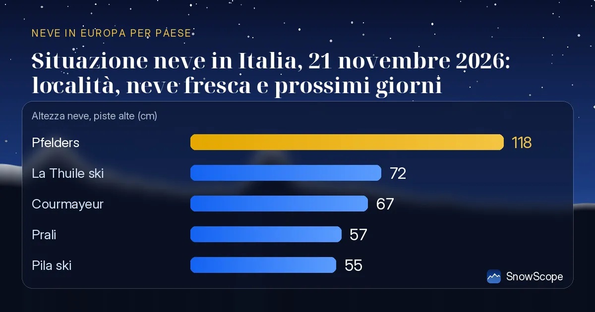
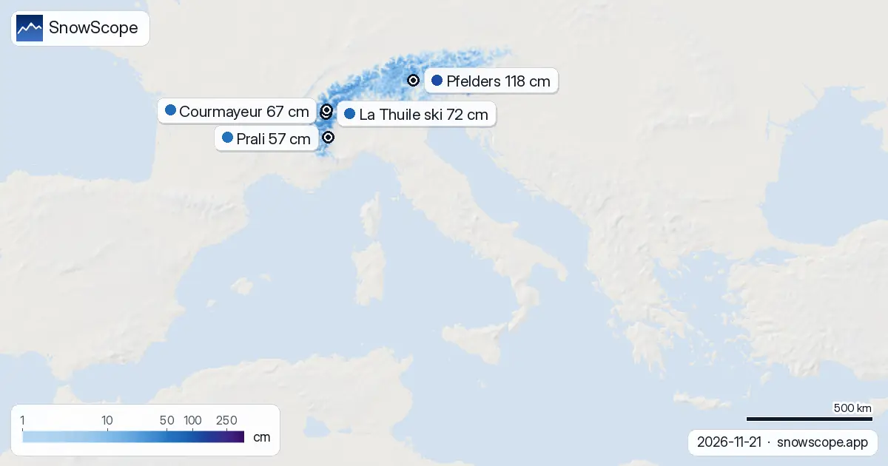
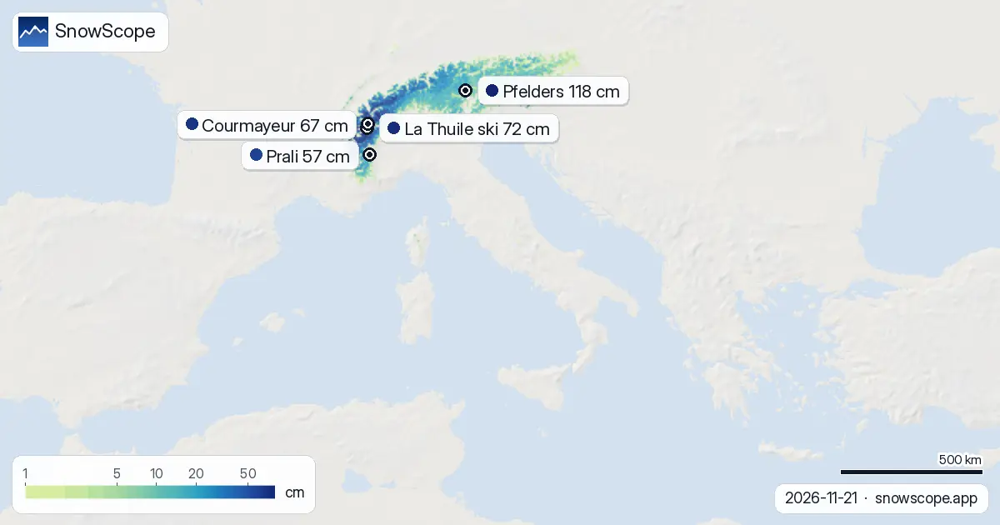

Situazione neve in Italia, 21 novembre 2026: località, neve fresca e prossimi giorni
Le forti nevicate degli ultimi tre giorni hanno portato le stazioni italiane al loro miglior inizio da settimane. Oggi, 164 su 238 stazioni hanno neve sui pendii superiori, e la Valle d'Aosta ha ricevuto quasi 2,3 metri di neve fresca.
Le previsioni neve in tempo reale per Pfelders nell'app SnowScopeAltezza neve, allerte powder e mappa 3D, gratis.
Il quadro generale: la copertura nevosa in Italia
I pendii bianchi coprono ora circa 24.510 km² delle montagne italiane mappate—il 26 percento dell'area totale. È un aumento di 4.580 km² rispetto a soli sette giorni fa, quando solo 19.930 km² erano ricoperti di neve.
La linea della neve si attesta intorno ai 1.500 m. Sotto questa quota, la maggior parte dei pendii è ancora nuda o a macchie. Sopra i 2.000 m, quasi tutto il terreno è coperto di neve (94 percento), quindi le piste in quota hanno una base solida su cui sciare.
| Località | Altezza neve | Neve fresca, 72 h | In arrivo, prossimi giorni | Quota max |
|---|---|---|---|---|
| Pfelders | 118 cm | 15 cm | 11 cm | 2.500 m |
| La Thuile ski | 72 cm | 97 cm | 71 cm | 2.608 m |
| Courmayeur | 67 cm | 105 cm | 76 cm | 2.749 m |
| Prali | 57 cm | 24 cm | 23 cm | – |
| Pila ski | 55 cm | 53 cm | 36 cm | 2.723 m |

Dove è più profonda: le prime cinque stazioni in questo momento
Pfelders guida il paese con 118 cm sui pendii superiori. Ha ricevuto 15 cm di neve fresca negli ultimi tre giorni e dovrebbe accumularne altri 11 cm entro martedì 24 novembre.
La Thuile ski ha 72 cm e ha ricevuto le cadute più abbondanti: 97 cm in tre giorni, con una previsione di altri 71 cm. Courmayeur si attesta a 67 cm (105 cm in tre giorni, 76 cm in arrivo). Prali mostra 57 cm e Pila ski 55 cm. Tutti e cinque si trovano in o vicino alla Valle d'Aosta e alle Alpi del Piemonte, le zone che hanno registrato le maggiori nevicate.

Tre giorni di forti nevicate: dove sono cadute
Tra il 18 e il 21 novembre, le montagne d'Italia hanno ricevuto fino a 55 cm di neve fresca, con i totali più alti in due zone. La Valle d'Aosta a nordovest ha assorbito la maggior parte: 228 cm sono caduti lì in 72 ore. Le Alpi del Piemonte, poco a sud, hanno raccolto 64 cm. Anche l'Appennino centrale ha ricevuto 5 cm.
Solo il 20 novembre, fino a 71 cm sono caduti sui pendii più alti. Domenica 22 novembre è prevista essere il giorno più nevoso della settimana, con fino a 37 cm possibili.
Come si confronta con la neve normale di novembre
Pfelders normalmente si attesta a 25 cm in questa data in un anno tipico; oggi ha 118 cm—più di quattro volte la quantità usuale. La Thuile ski ha una media di 28 cm ma si attesta a 72 cm (quasi tre volte la norma). Courmayeur di solito ha 25 cm adesso ma mostra 67 cm (quasi tre volte la norma).
È un inizio eccezionale. In tutte e cinque le stazioni controllate qui, le profondità sono ben al di sopra della loro media storica per fine novembre. La neve migliore in queste stazioni negli inverni passati arriva tipicamente in gennaio e febbraio, non a novembre, quindi gli sciatori di inizio stagione stanno ricevendo un dono raro.
Cosa aspettarsi nella prossima settimana
Le previsioni per i giorni 1-7 mostrano fino a 62 cm possibili. I prossimi tre giorni da soli potrebbero portare 40 cm. Dopo di ciò, le previsioni si attenuano: i giorni 8-14 suggeriscono solo fino a 23 cm.
Se pianifichi un viaggio nei prossimi giorni, il momento è importante. La neve fresca più abbondante cadrà domenica 22 novembre e poco dopo. Entro allora dovrebbe essere abbastanza stabile per sciare in sicurezza, e le strade dovrebbero essere liberate.
L'altitudine conta: profondità della neve per elevazione
Sali più in alto, trova neve più profonda. Tra i 500 m e i 1.000 m, quasi nessuna neve giace al suolo (1 percento bianco). Da 1.000 m a 1.500 m, la copertura salta al 17 percento ma la profondità è ancora sotto 1 cm in media. Tra 1.500 m e 2.000 m, la neve ha una media di 3 cm e copre il 66 percento del terreno—aspettati macchie visibili di erba o roccia.
Sopra i 2.000 m il quadro cambia. Tra 2.000 m e 2.500 m, la profondità media raggiunge 11 cm (94 percento bianco). Sopra 2.500 m, la profondità media è 27 cm e il terreno è coperto al 99 percento. Per uno sci continuo, punta a 2.000 m o superiore.
L'Italia rispetto ai suoi vicini
L'Austria ha il 56 percento delle sue montagne mappate bianche oggi. Stubaier Gletscher guida l'Austria con 63 cm. La Svizzera è ancora più bianca con il 64 percento di copertura, con Anzère che mostra 86 cm. Entrambi i vicini dovrebbero ricevere più neve: l'Austria potrebbe accumulare fino a 35 cm nella settimana a venire, e la Svizzera fino a 74 cm. La quota bianca italiana del 26 percento è inferiore alla loro, ma la traiettoria è in salita.
Consigli per sciatori
- Scegli le piste più alte che puoi raggiungere: sopra 2.000 m la neve è continua e stabile. I pendii inferiori hanno ancora macchie nude e coperture sottili su rocce.
- Domenica 22 novembre e i giorni successivi offrono la neve più fresca. Aspetta un giorno o due perché si assesti prima di sciare su terreni ripidi, e fai attenzione alla neve compressa dal vento su creste e vette.
- La neve fresca su una base fredda può essere scivolosa su pendii ripidi. Scendi con cautela, e scendi prima nel corso della giornata prima che il sole ammorbidisca la superficie.
- Le strade verso le stazioni più alte potrebbero richiedere pneumatici invernali o catene. Controlla le condizioni prima di partire.
- Consulta il bollettino ufficiale delle valanghe per la tua regione prima di lasciare le piste segnate. La neve fresca e le temperature fredde possono creare strati instabili su pendii ripidi.
Su questi numeri
Le altezze neve delle località sono la neve più alta sui pendii superiori alla data indicata; sono stime per un'area, non una misura in un punto. Le previsioni possono cambiare. Leggi sempre il bollettino valanghe ufficiale prima del fuoripista.
Cita questo articolo
Per ricerca, didattica o stampa: numeri e grafici sono liberamente riutilizzabili con licenza CC BY 4.0 citando così.
SnowScope (2026), Situazione neve in Italia, 21 novembre 2026: località, neve fresca e prossimi giorni, https://snowscope.app/blog/it/2026/11/italy-resorts-with-snow-21-november-2026.html, consultato il 2026-11-21
SnowScope (Atlas Labs). (2026, November 21). Situazione neve in Italia, 21 novembre 2026: località, neve fresca e prossimi giorni. SnowScope snow reports. https://snowscope.app/blog/it/2026/11/italy-resorts-with-snow-21-november-2026.html
BibTeX
@misc{snowscope2026italyresortswithsnow21no,
author = {{SnowScope (Atlas Labs)}},
title = {Situazione neve in Italia, 21 novembre 2026: località, neve fresca e prossimi giorni},
year = {2026},
month = nov,
howpublished = {\url{https://snowscope.app/blog/it/2026/11/italy-resorts-with-snow-21-november-2026.html}},
note = {Published 2026-11-21 11:49 UTC; accessed 2026-11-21}
}· CC BY 4.0 · Metodi, dati e strumenti →
Pfelders: neve e temperatura per quota, quest'inverno vs lo scorso (strumenti) →
Segui Pfelders
Gratis: un messaggio quando arriva la neve e il meteo ogni mattina.